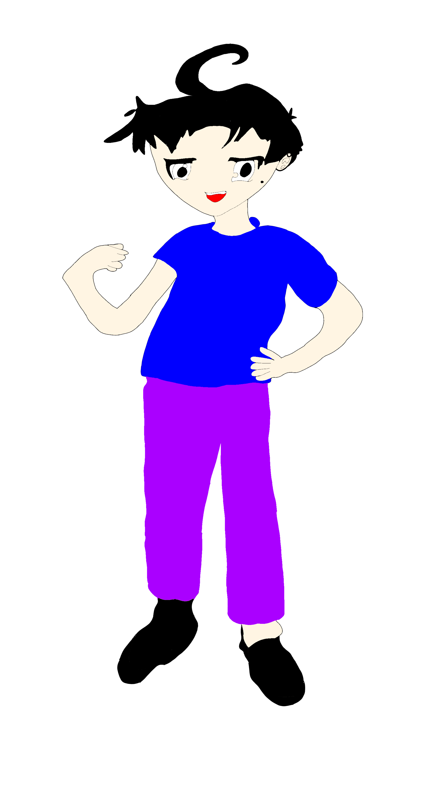
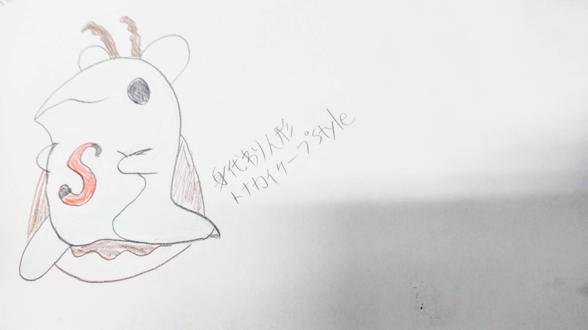
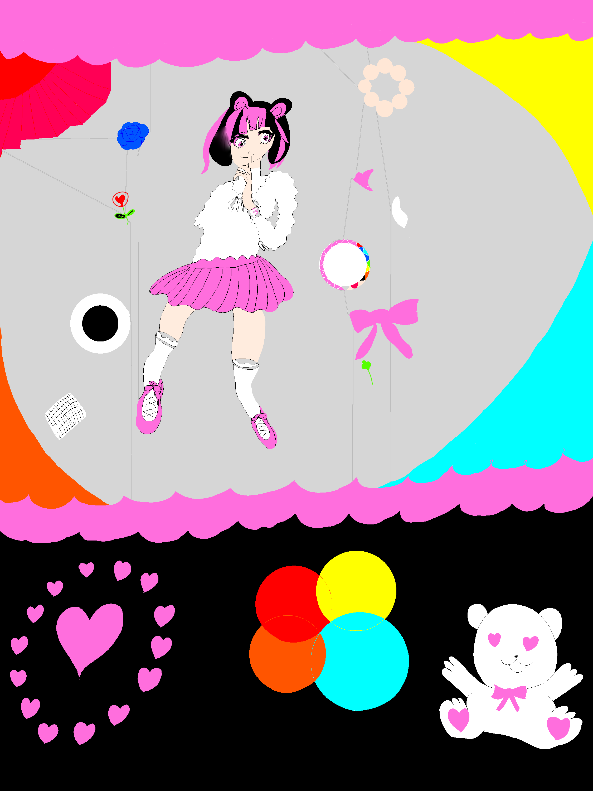
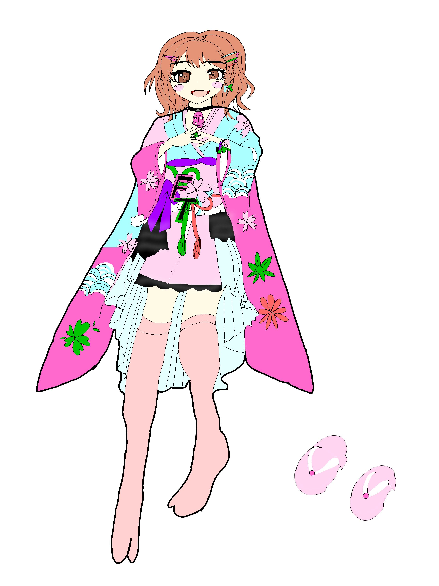
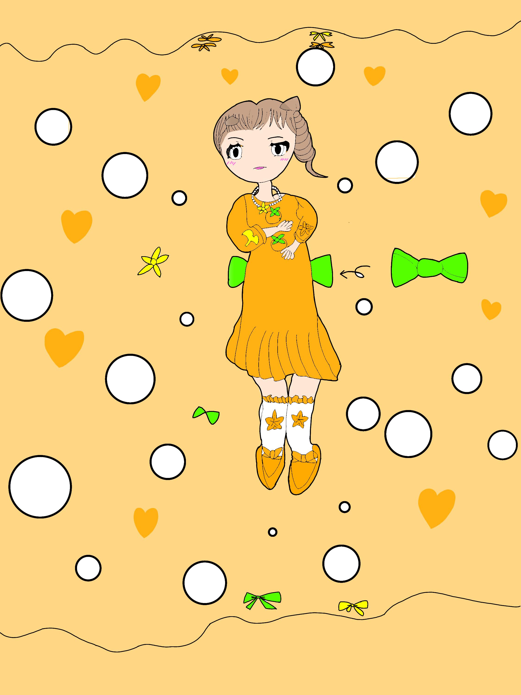
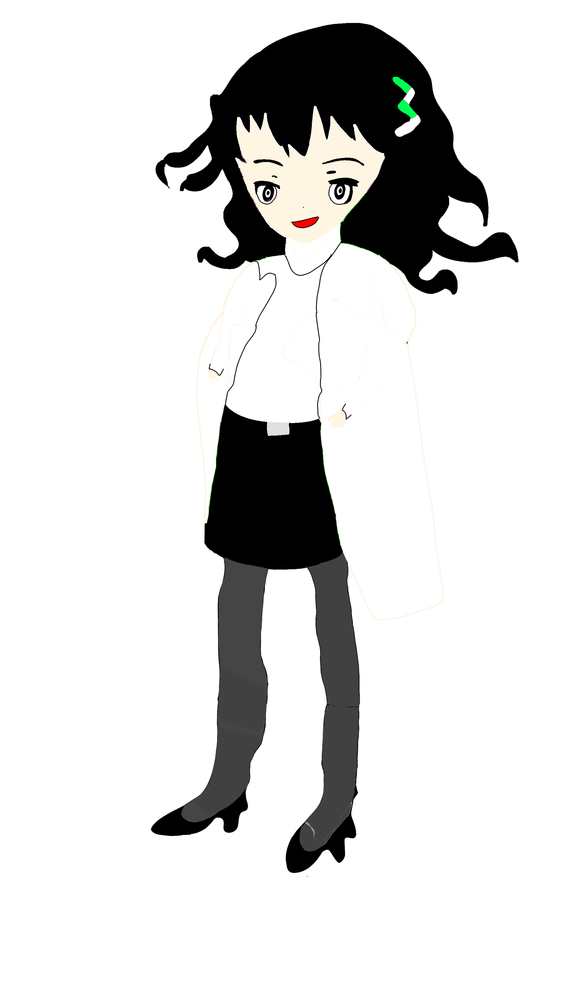
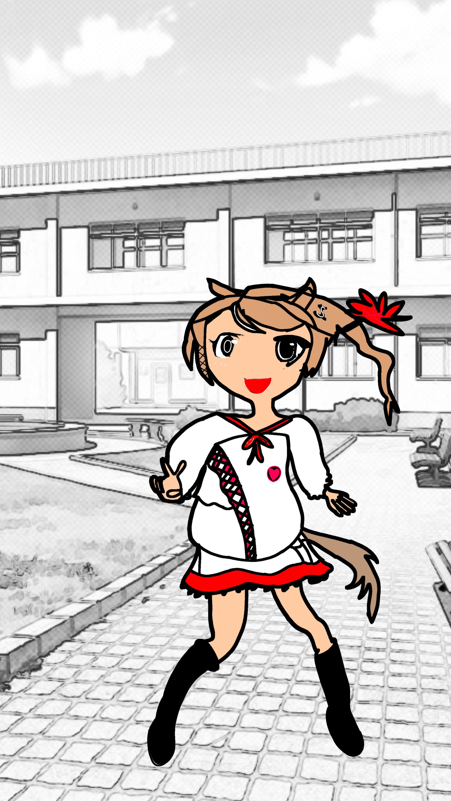
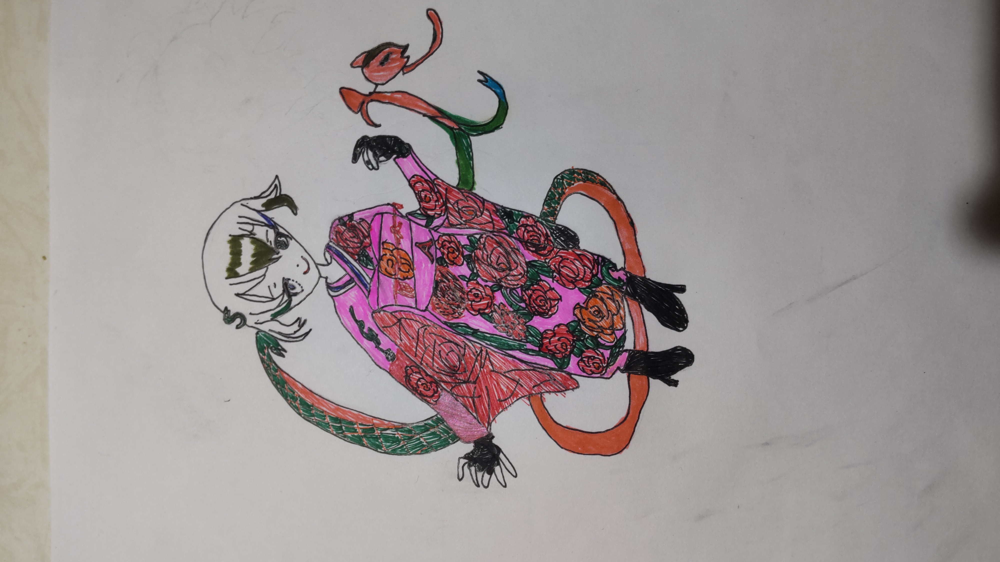
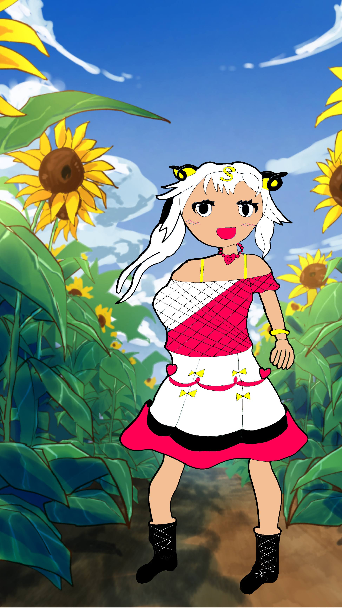

■ 言葉演算：世界の住人とアイテム
巫女装束新道鈴夏
巫女の血を受け継ぐ神童。霊力を宿した巫女装束姿。

私服阿鹿有馬
私服で大樹の丘を訪れた男子学生。

身代わり人形
言葉演算に登場する特殊なアイテム。情報屋が渡した身代わり機能を持つ人形。
 身代わり人形_トナカイ衣装
身代わり人形がトナカイの衣装を着た姿。
身代わり人形_トナカイ衣装
身代わり人形がトナカイの衣装を着た姿。

今井環のシンプルコーデ
今井環が着るシンプルなコーデ。

今井環春の和服姿
今井環が着る春の和服姿。

古賀瑛梨食欲の秋服
古賀瑛梨が着る食欲の秋服。

白衣南葉智紗乃
白衣南葉智紗乃の姿。

北馬・ユキエーズカin学校
学校内に居る北馬・ユキエーズカ。

巳美・サーペンティア_クリスマス衣装
巳美・サーペンティアが着るクリスマス衣装。
クリスマスをテーマに、巳美・サーペンティアさんの特別な衣装を描きました。
白と赤を基調とした、和と洋が融合した華やかな和モダンなドレス。
蛇のモチーフをあしらったアクセサリーや、こちらの様子を伺うような少しミステリアスな表情がポイントです。
聖夜に佇む、彼女の全身の姿をぜひご覧ください

綿巻・ヒツジーナin向日葵畑
綿巻・ヒツジーナが向日葵畑にいる様子。

創作系三人娘
以下の者を纏めて創作系三人娘と呼んでいる。
佐々木麗良、月島佐奈、共鳴未由の三人。

← CGポータルへ戻る